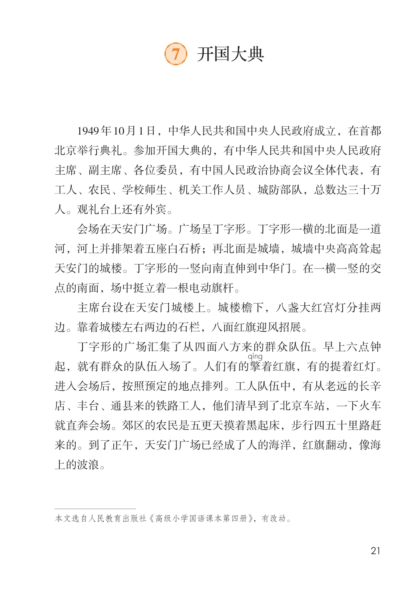
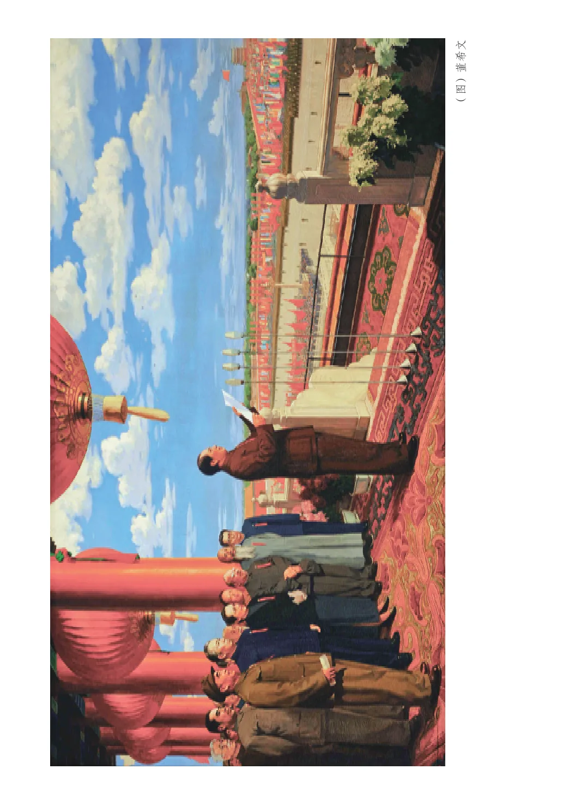
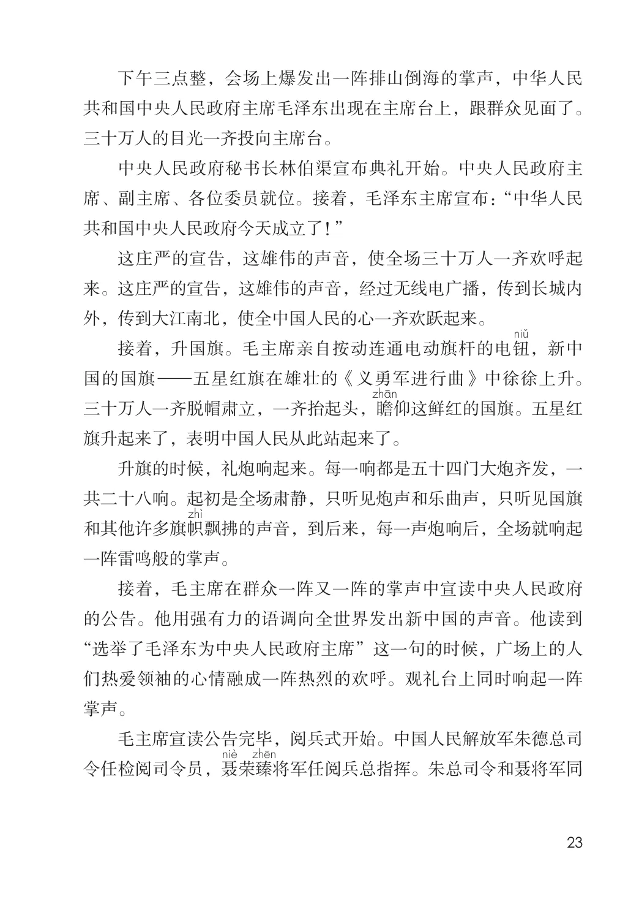
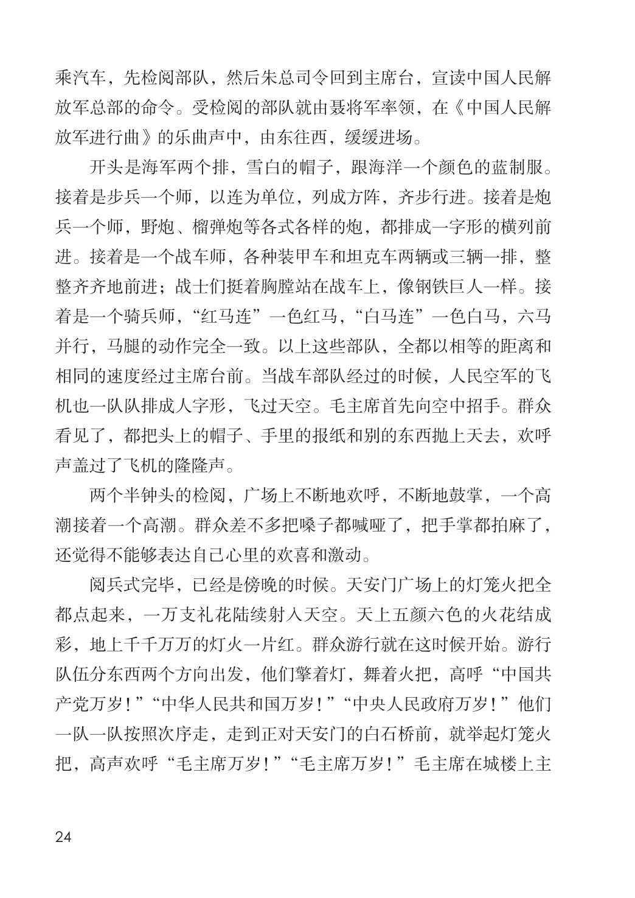
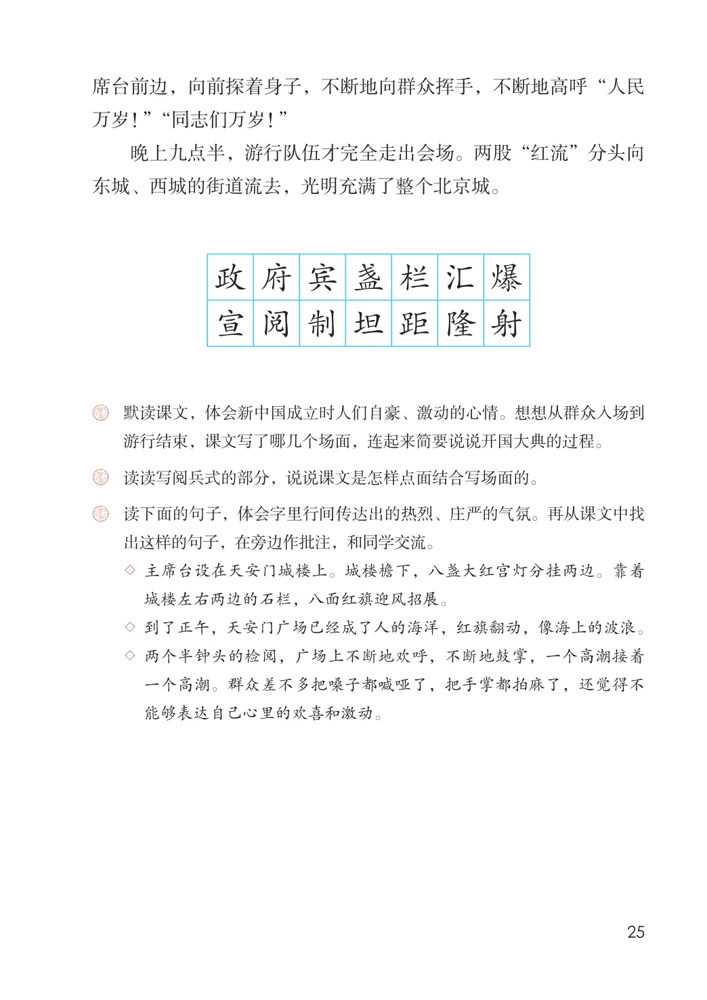

第二单元 · 第 7 课
开国大典
文字内容 PDF 第 26 页
1949年10月1日，中华人民共和国中央人民政府成立，在首都北京举行典礼。参加开国大典的，有中华人民共和国中央人民政府主席、副主席、各位委员，有中国人民政治协商会议全体代表，有工人、农民、学校师生、机关工作人员、城防部队，总数达三十万人。观礼台上还有外宾。
会场在天安门广场。广场呈丁字形。丁字形一横的北面是一道河，河上并排架着五座白石桥；再北面是城墙，城墙中央高高耸起天安门的城楼。丁字形的一竖向南直伸到中华门。在一横一竖的交点的南面，场中挺立着一根电动旗杆。
主席台设在天安门城楼上。城楼檐下，八盏大红宫灯分挂两边。靠着城楼左右两边的石栏，八面红旗迎风招展。
丁字形的广场汇集了从四面八方来的群众队伍。早上六点钟起，就有群众的队伍入场了。人们有的擎着红旗，有的提着红灯。进入会场后，按照预定的地点排列。工人队伍中，有从老远的长辛店、丰台、通县来的铁路工人，他们清早到了北京车站，一下火车就直奔会场。郊区的农民是五更天摸着黑起床，步行四五十里路赶来的。到了正午，天安门广场已经成了人的海洋，红旗翻动，像海上的波浪。
文字内容 PDF 第 27 页
（图）董希文
文字内容 PDF 第 28 页
下午三点整，会场上爆发出一阵排山倒海的掌声，中华人民共和国中央人民政府主席毛泽东出现在主席台上，跟群众见面了。三十万人的目光一齐投向主席台。
中央人民政府秘书长林伯渠宣布典礼开始。中央人民政府主席、副主席、各位委员就位。接着，毛泽东主席宣布：“中华人民共和国中央人民政府今天成立了！”
这庄严的宣告，这雄伟的声音，使全场三十万人一齐欢呼起来。这庄严的宣告，这雄伟的声音，经过无线电广播，传到长城内外，传到大江南北，使全中国人民的心一齐欢跃起来。
接着，升国旗。毛主席亲自按动连通电动旗杆的电钮，新中国的国旗—五星红旗在雄壮的《义勇军进行曲》中徐徐上升。三十万人一齐脱帽肃立，一齐抬起头，瞻仰这鲜红的国旗。五星红旗升起来了，表明中国人民从此站起来了。
升旗的时候，礼炮响起来。每一响都是五十四门大炮齐发，一共二十八响。起初是全场肃静，只听见炮声和乐曲声，只听见国旗和其他许多旗帜飘拂的声音，到后来，每一声炮响后，全场就响起一阵雷鸣般的掌声。
接着，毛主席在群众一阵又一阵的掌声中宣读中央人民政府的公告。他用强有力的语调向全世界发出新中国的声音。他读到“选举了毛泽东为中央人民政府主席”这一句的时候，广场上的人们热爱领袖的心情融成一阵热烈的欢呼。观礼台上同时响起一阵掌声。
毛主席宣读公告完毕，阅兵式开始。中国人民解放军朱德总司令任检阅司令员，聂荣臻将军任阅兵总指挥。朱总司令和聂将军同
文字内容 PDF 第 29 页
乘汽车，先检阅部队，然后朱总司令回到主席台，宣读中国人民解放军总部的命令。受检阅的部队就由聂将军率领，在《中国人民解放军进行曲》的乐曲声中，由东往西，缓缓进场。
开头是海军两个排，雪白的帽子，跟海洋一个颜色的蓝制服。接着是步兵一个师，以连为单位，列成方阵，齐步行进。接着是炮兵一个师，野炮、榴弹炮等各式各样的炮，都排成一字形的横列前进。接着是一个战车师，各种装甲车和坦克车两辆或三辆一排，整整齐齐地前进；战士们挺着胸膛站在战车上，像钢铁巨人一样。接着是一个骑兵师，“红马连”一色红马，“白马连”一色白马，六马并行，马腿的动作完全一致。以上这些部队，全都以相等的距离和相同的速度经过主席台前。当战车部队经过的时候，人民空军的飞机也一队队排成人字形，飞过天空。毛主席首先向空中招手。群众看见了，都把头上的帽子、手里的报纸和别的东西抛上天去，欢呼声盖过了飞机的隆隆声。
两个半钟头的检阅，广场上不断地欢呼，不断地鼓掌，一个高潮接着一个高潮。群众差不多把嗓子都喊哑了，把手掌都拍麻了，还觉得不能够表达自己心里的欢喜和激动。
阅兵式完毕，已经是傍晚的时候。天安门广场上的灯笼火把全都点起来，一万支礼花陆续射入天空。天上五颜六色的火花结成彩，地上千千万万的灯火一片红。群众游行就在这时候开始。游行队伍分东西两个方向出发，他们擎着灯，舞着火把，高呼“中国共产党万岁！”“中华人民共和国万岁！”“中央人民政府万岁！”他们一队一队按照次序走，走到正对天安门的白石桥前，就举起灯笼火把，高声欢呼“毛主席万岁！”“毛主席万岁！”毛主席在城楼上主
文字内容 PDF 第 30 页
席台前边，向前探着身子，不断地向群众挥手，不断地高呼“人民万岁！”“同志们万岁！”
晚上九点半，游行队伍才完全走出会场。两股“红流”分头向东城、西城的街道流去，光明充满了整个北京城。
政府宾盏栏汇爆宣阅制坦距隆射
课后练习
- 默读课文，体会新中国成立时人们自豪、激动的心情。想想从群众入场到
- 游行结束，课文写了哪几个场面，连起来简要说说开国大典的过程。
- 读读写阅兵式的部分，说说课文是怎样点面结合写场面的。
- 读下面的句子，体会字里行间传达出的热烈、庄严的气氛。再从课文中找
- 出这样的句子，在旁边作批注，和同学交流。
- ◇ 主席台设在天安门城楼上。城楼檐下，八盏大红宫灯分挂两边。靠着城楼左右两边的石栏，八面红旗迎风招展。
- ◇ 到了正午，天安门广场已经成了人的海洋，红旗翻动，像海上的波浪。
- ◇ 两个半钟头的检阅，广场上不断地欢呼，不断地鼓掌，一个高潮接着一个高潮。群众差不多把嗓子都喊哑了，把手掌都拍麻了，还觉得不能够表达自己心里的欢喜和激动。
原版对照
原书页面与全部插图
点击图片可查看大图。




